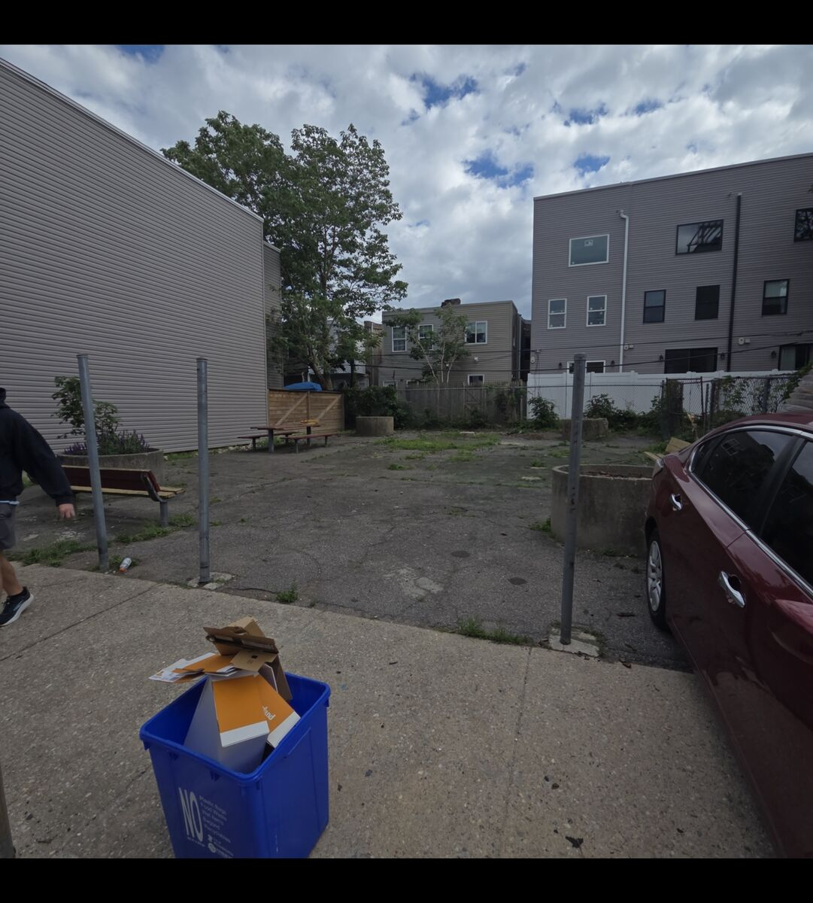
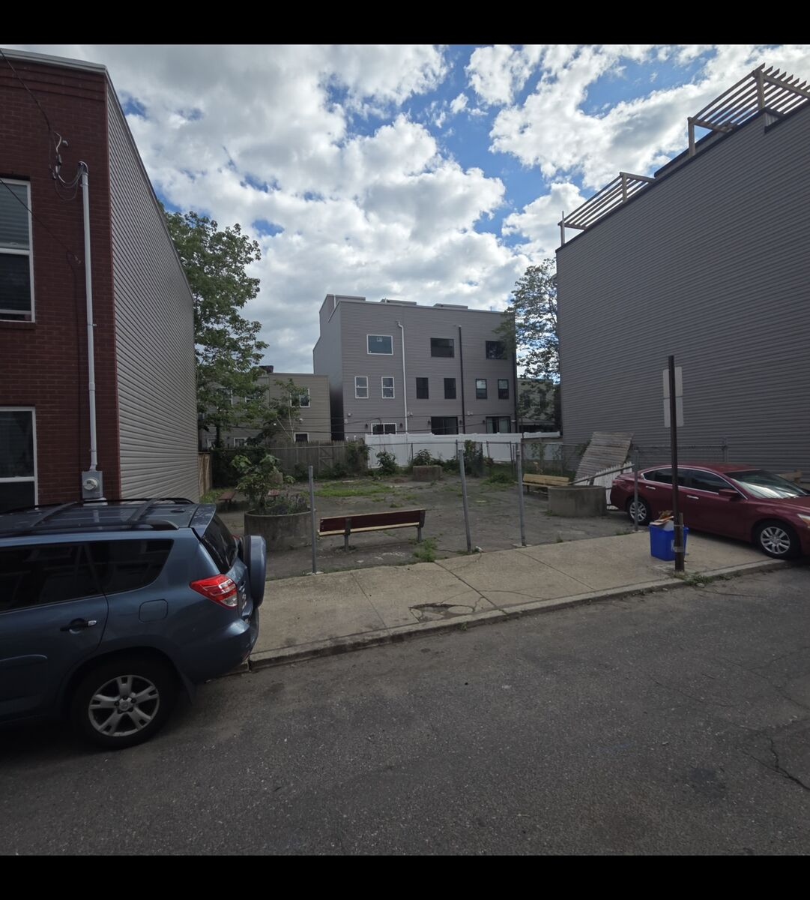
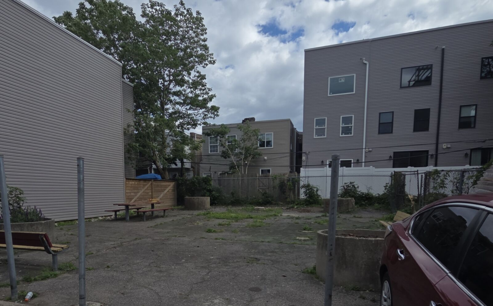

Hey, I’m Rob and I’ve been trying to keep this lot clean for all the kids that have moved in over the last few years, but I’d like to do a little more and breathe a little life back into our old Earp Street Playground - it might not be a playground anymore, but it can still be beautiful.
If you see a blonde guy with a tape measure and a sketchbook (or neck deep in weeds), come say hi! I have so many questions about this old lot, and I'd love to hear more about the history of the lot and the planters!
This Week
Lots of weeding! I didn’t realize how quickly it can get overgrown across the fencing and in the planters.
Open the week ›
9/2/2026
Lots of weeding! I didn’t realize how quickly it can get overgrown across the fencing and in the planters. With Fall approaching, that means we’re almost in tree planting season - and how good would some fruiting or shade trees look in those planters? Fig trees have been on my mind lately.

The whole lot in one frame, from the street. Tree, table, planters, weeds. The before picture.
Older entries
____________
The street edge, from across the road. Some chain-link, a lot of gaps, and a sheet of plywood leaning where a gate ought to be. A fence along here is first on the list.

This is where the fence goes.____________
Nothing here yet.
____________
Still nothing. Old work fades down here, like notices that have been up a while.

The lot nowSecond angle — stand-in
← →
Drag the handle to compare. Both sides are the lot as it stands — the right side stands in until a real after-photo replaces it.
The Plan & The Ask
A fence, a sign, new boards, trees in the planters — and the people, materials, and truck to make it happen.
Open the plan ›
The plan
A fence along the street edge
Finding some sort of fencing we can rig onto the metal fence posts. I’m thinking wood pallets could do the job nicely (and free!)
A “No Dumping” sign
Our block captain can request one for free, but if we don’t have a captain then I’ll keep an eye on Facebook marketplace for one.
Fresh slats on the picnic table and benches
We need some new wood for the benches and picnic table. They’re easy to replace and the current wood is too damaged to repair easily. Then we can paint them and get them looking nice! That’s 18 pieces of 2”x6” pressure treated lumber I’m looking for.
Trees in the existing planters
Until I can get the Redevelopment Authority’s “permission” to do work restoring this lot as a park, we can’t request a tree from PHS. I’m working on getting “permission”, but until then if anyone knows of some free Fig trees or shade trees, let me know!
What it needs
People
If anyone wants to help out, I’ll put together a day we can all go out and clean up the debris, weed the perimeter, maybe plant some things, maybe work on the table and benches, just let me know! I’d be grateful for any help - it’s a big lot!
Materials
Pressure treated lumber
Paint and paint brushes (no specific color, we’ll take what we can get and make it work!)
Wood pallets
Bollard caps
A truck
Something with an open bed for one afternoon: scrap and old wood out, lumber and trees in. If you have one and a free afternoon, the form on this board works.
Stories & Suggestions
So I’ve heard a lot of stories about this old lot, how it used to be a playground, what it used to be for all the kids and the parents on the block.
Open & write ›
So I’ve heard a lot of stories about this old lot, how it used to be a playground, what it used to be for all the kids and the parents on the block. And I’m not here to turn it into anything that it already wasn’t - a clean, safe place for the kids that parents will feel safe with their kids playing at.